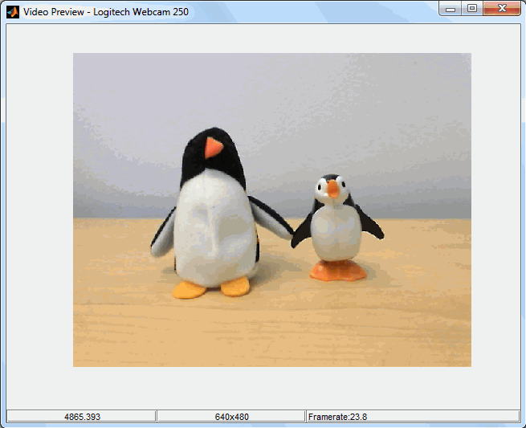

To acquire images from a Webcam, you first create a Webcam object.
Use the webcam function
to create a Webcam object. You can use it in one of three ways:
| Connect to the first or only camera, by using no input arguments |
| Specify a camera by name, by using the Webcam name (as a string) as an input argument |
| Specify a camera by the list order, by using an index number as the input argument |
Note: Webcam support is available only through a Hardware Support Package. You must download and install the necessary files using the Support Package Installer. For instructions, see Install the Webcam Support Package. |
Find the name of your camera by using the webcamlist function. Run webcamlist first
to make sure that MATLAB® can discover your camera(s). In this
example, it discovers the built-in Webcam in the Dell® computer,
and a connected Logitech® Webcam.
webcamlist ans = 'Logitech Webcam 250' 'Dell Camera C250'
No Input Argument
If you use the webcam function with no input
argument, it creates the object and connects to the first camera returned
by webcamlist. In this case, it uses the Logitech camera,
since that appears in the list first.
% Use cam as the name of the object.
cam = webcam
cam =
webcam with properties:
Name: 'Logitech Webcam 250'
Resolution: '640x480'
AvailableResolutions: {1x11 cell}
Exposure: -4
Gain: 253
Saturation: 32
WhiteBalance: 8240
ExposureMode: 'auto'
Sharpness: 48
Brightness: 128
BacklightCompensation: 1
Contrast: 32When you create the webcam object, it connects
to the camera, establishes exclusive access, and starts streaming
data. You can then preview the data and acquire images using the snapshot function,
as described in the next section, Acquiring Webcam Images.
Index as Input Argument
If you use the webcam function with an index
as the input argument, it creates the object corresponding to that
index and connects to that camera. If you only have one camera, you
do not need to use the index. You can use the webcam function
with no input argument and it creates the object with the single camera
that is connected. The index is useful when you have multiple cameras.
The index corresponds to the order of cameras in the cell array
returned by webcamlist when you have multiple cameras
connected. In this example, device 1 is the Logitech camera
and device 2 is the built-in Dell Webcam.
webcamlist ans = 'Logitech Webcam 250' 'Dell Camera C250'
% Use cam as the name of the object. Use 2 to connect to the Dell camera.
cam = webcam(2)
cam =
webcam with properties:
Name: 'Dell Camera C250'
Resolution: '320x240'
AvailableResolutions: ('320x240' '160x120' '80x60')
Brightness: 128
Contrast: 32
Gain: 0Camera Name as Input Argument
If you use the webcam function with the name
of the camera (as a string) as the input argument, it creates the
object and connects to the camera with that name. Use the exact name
that is displayed by the webcamlist function, such
as 'Logitech Webcam 250', or use a shortened version
of the name, such as the camera brand. In this case, you can simply
use 'Logitech' to connect to the Logitech Webcam.
% Use cam as the name of the object. Use 'Logitech' to connect to the Logitech camera.
cam = webcam('Logitech')
cam =
webcam with properties:
Name: 'Logitech Webcam 250'
Resolution: '640x480'
AvailableResolutions: {1x11 cell}
Exposure: -4
Gain: 253
Saturation: 32
WhiteBalance: 8240
ExposureMode: 'auto'
Sharpness: 48
Brightness: 128
BacklightCompensation: 1
Contrast: 32When you create the webcam object, it connects
to the camera, establishes exclusive access, and starts streaming
data. You can then preview the data and acquire images using the snapshot function,
as described in the next section, Acquiring Webcam Images.
This example describes the typical workflow for acquiring images from Webcams and bringing them into MATLAB.
Find the cameras that are connected to your system and make sure MATLAB can detect them.
webcamlist ans = 'Logitech Webcam 250' 'Dell Camera C250'
The output is a list of any Webcams that are connected to your system. In this example, it discovers a built-in Webcam in the Dell computer, and a connected Logitech Webcam.
Create a webcam object called cam,
using the Logitech camera.
cam = webcam('Logitech')
cam =
webcam with properties:
Name: 'Logitech Webcam 250'
Resolution: '640x480'
AvailableResolutions: {1x11 cell}
Exposure: -4
Gain: 253
Saturation: 32
WhiteBalance: 8240
ExposureMode: 'auto'
Sharpness: 48
Brightness: 128
BacklightCompensation: 1
Contrast: 32Preview the image. The size of the preview image is
determined by the value of the resolution property.
The preview window shows a live RGB image from the Webcam. The preview
window also displays the camera name, resolution, frame rate, and
the timestamp in seconds. Timestamp is the elapsed time since the
object was created. To preview your image, call the preview function
on the object name, which is cam in this example.
preview(cam)

The preview updates dynamically, so if you change a property while previewing, the image changes to reflect the property change.
Set any properties that you need to change. For example, you might want to change the resolution.
First you can see the resolutions your camera supports using
the AvailableResolutions property.
cam.AvailableResolutions
ans =
Columns 1 through 6
'640x480' '160x90' '160x100' '160x120' '176x144' '320x180'
Columns 7 through 11
'320x200' '320x240' '352x288' '640x360' '640x400'Change the resolution.
cam.Resolution = '320x240';
For information on which properties you can set for Webcams and how to set them, see Set Properties for Webcam Acquisition.
Close the preview at any time using the closePreview function.
closePreview(cam)
If you do not explicitly close the preview, it closes when you
clear the webcam object.
Acquire a single image from the camera using the snapshot function
and assign it to the variable img.
img = snapshot(cam);
Display the acquired image.
imshow(img)
The imshow function is part of the Image Processing Toolbox™.
If you do not have that product, you can use the image function
that is part of MATLAB.
image(img)
Clean up by clearing the object.
clear('cam');For an example showing how to acquire images in a loop, see Acquire Webcam Images in a Loop. For a list of the functions you can use with the Webcam support, see Supported Functions for Webcam.